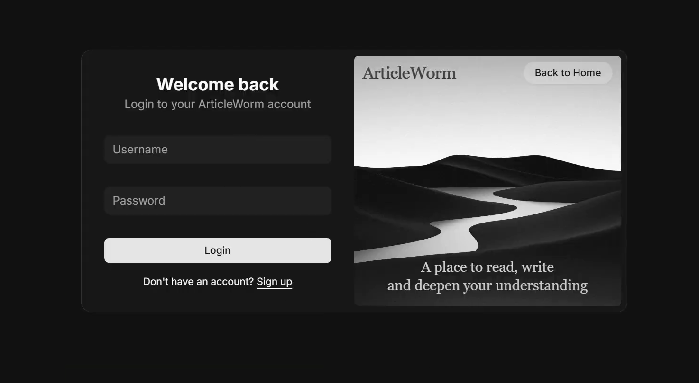
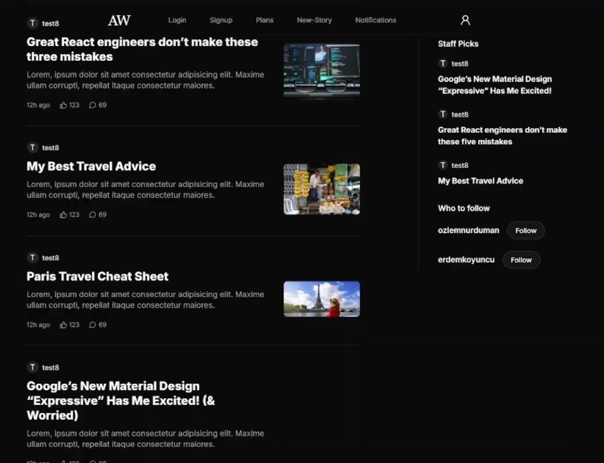
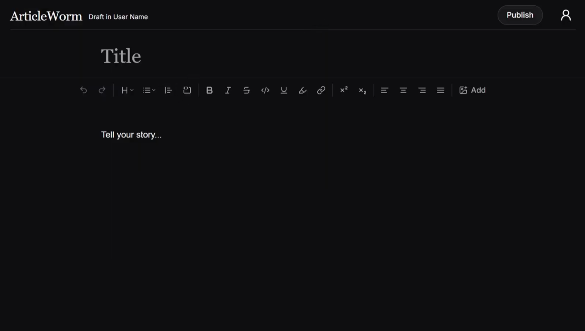
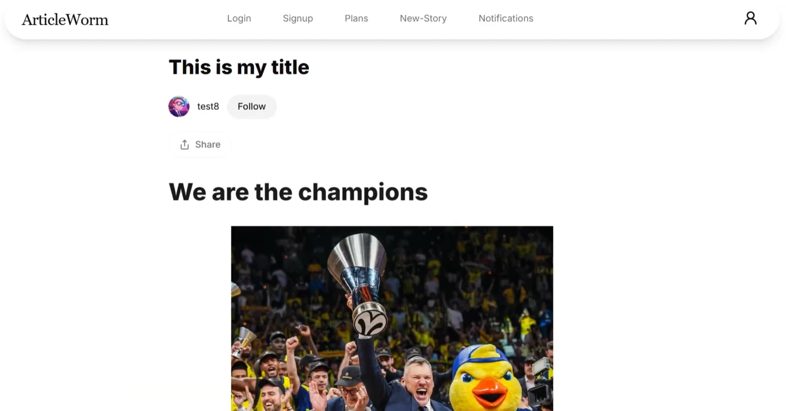
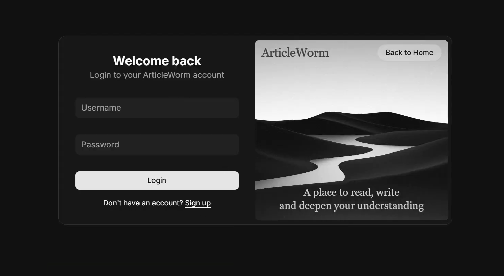
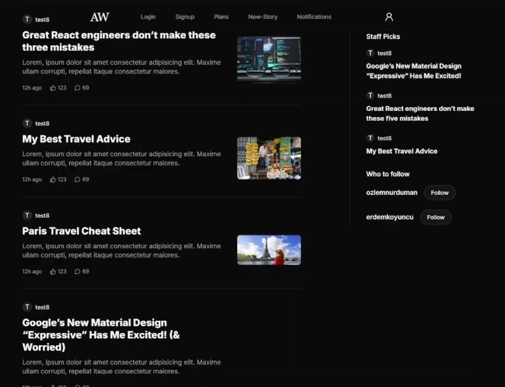
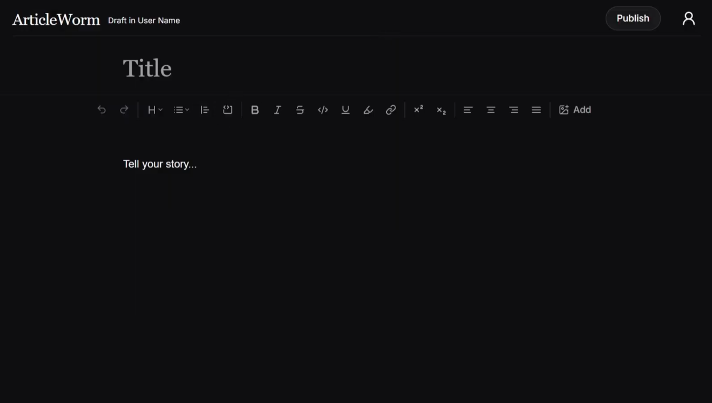
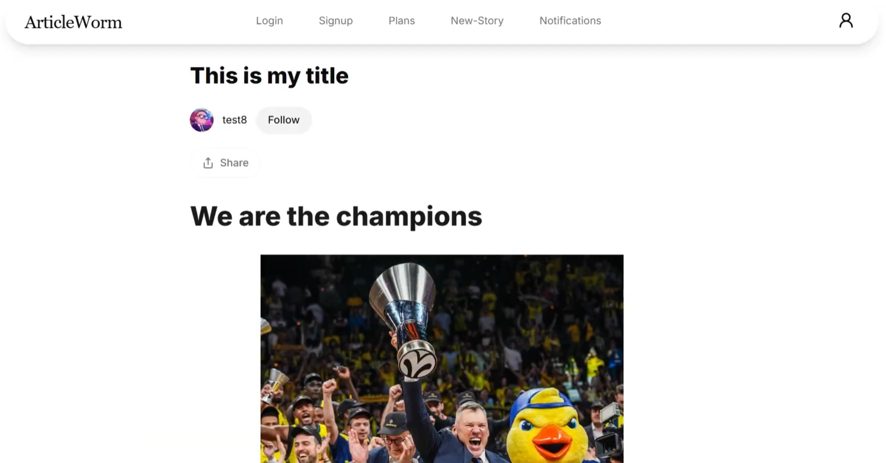
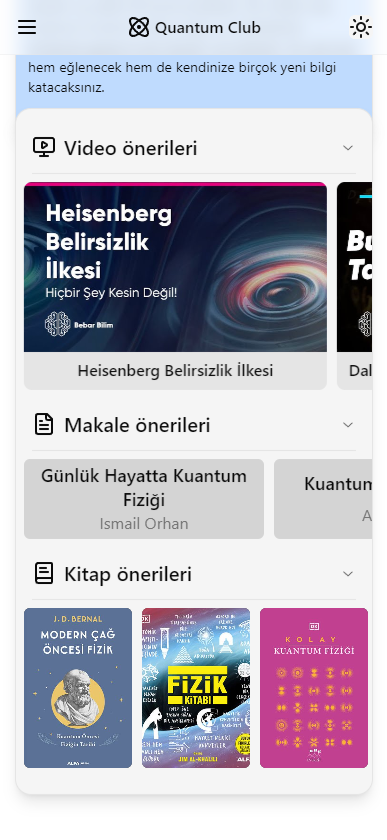
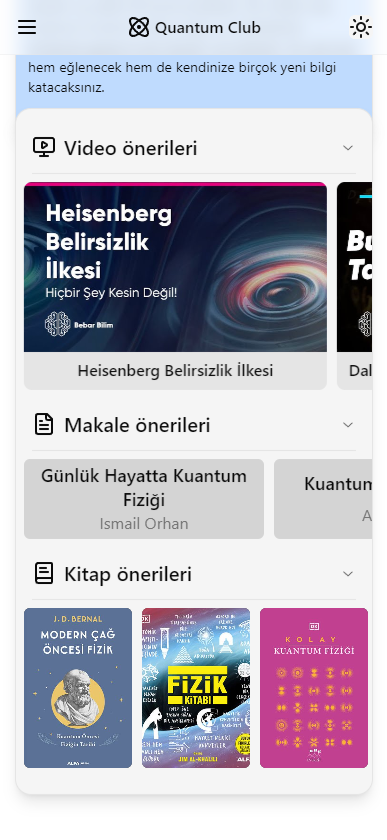

Hakkımda
Hızla gelişen web dünyasında üretmekten keyif alan bir yazılım mühendisliği öğrencisiyim. En yeni araç ve trendleri denemeyi seviyor, yalnızca işlevsel değil aynı zamanda sezgisel ve kullanıcı dostu projeler ortaya koymaya çalışıyorum.
Hızla gelişen web dünyasında üretmekten keyif alan bir yazılım mühendisliği öğrencisiyim. En yeni araç ve trendleri denemeyi seviyor, yalnızca işlevsel değil aynı zamanda sezgisel ve kullanıcı dostu projeler ortaya koymaya çalışıyorum.
Detaylar için kartlara tıklayın
Cesur ve modern tasarımlar üretmeyi seviyorum. Sadece estetik değil, aynı zamanda kullanıcıyı sezgisel şekilde yönlendiren arayüzler kurguluyorum.
Temiz, duyarlı (responsive) ve erişilebilir arayüzler geliştiriyorum.
Doğal ve zahmetsiz hissettiren etkileşimler tasarlamaya odaklanıyorum. Karar alırken her zaman kullanıcının yolculuğunu merkeze koyuyorum.
Her şeyin göründüğü kadar sorunsuz çalıştığından emin olmak için test etmeye önem veriyorum.
Günlük hayatta sıkça karşılaşılan ortak liste sorununa pratik bir çözüm getirmeye çalıştım. Paylaşılan listeler üzerinden birlikte düzenleme ve takip imkânı sunuyor.
Frontend ve tasarımından sorumlu olduğum bu proje; blog, haber veya kişisel amaçlarla kolayca yazı oluşturup paylaşmayı sağlıyor.
 







Hızlı, güvenilir ve doğrulanabilir haber paylaşımını ön planda tutan bir proje geliştirdim.
Florist projemde farklı ekran boyutları ve cihazlarda sorunsuz çalışan duyarlı (responsive) bir tasarım geliştirmeye odaklandım.
Üniversitemizde yeni kurulan bir kulüp için hazırladığım bu web sitesinde akıcı animasyonlar, geçişler ve renkler kullandım. Hem açık hem de koyu modda uyumlu çalışacak şekilde tasarlandı.
 
